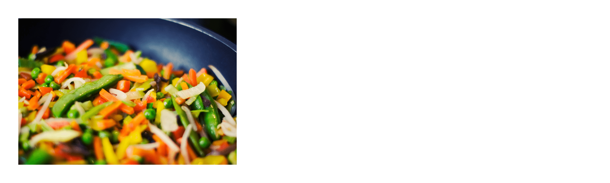

Quick and Delicious Meal Recipes
Quick Meal 1: Tasty Sandwich
A super-quick and delicious sandwich recipe perfect for a speedy lunch or dinner.
Ingredients:
- 2 slices of bread
- Turkey or ham slices
- Lettuce and tomato

Quick Meal 2: Stir-Fry Delight
A quick and flavorful stir-fry recipe that's ready in no time. Ideal for a busy evening.
Ingredients:
- Chicken or tofu
- Mixed vegetables
- Soy sauce and seasoning
Quick Meal 3: Breakfast Smoothie
A nutritious and quick breakfast smoothie to kickstart your day with energy and taste.
Ingredients:
- Yogurt or milk
- Fruits (bananas, berries)
- Honey or sweetener